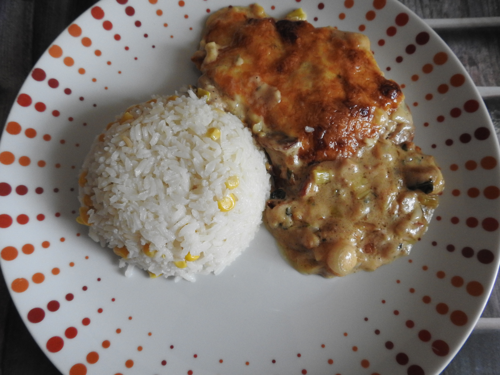

home
címkék
Keresés
Véletlen Gombás Recept
Gombás
Csirkés Rizottó gombával
Gombapörkölt
Gombás Csirke Batyu
Chicken Mushroom cobbler
Gombás Csirke Ragu
Chicken mushroom casserole

Gombás-Sajtos tepsis hús
Gombás-Tejfölös sertés szelet galuskával
Olaszos-tejszínes gombaszósz spagettivel
Gombakrémleves
Gombás-Csirkés Pite
Mushroom chicken pie